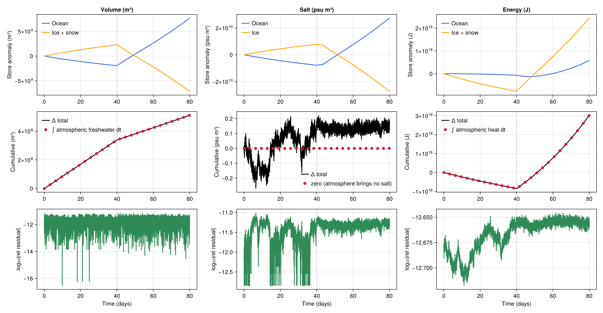

Coupled conservation on a z-star grid
In this example, we run a minimal-physics OceanSeaIceModel through a freeze-then-melt cycle on a free-surface-following (z-star) grid, and verify that three coupled budgets close to machine precision: volume, salt, and energy. The setup is a small doubly periodic ocean with thermodynamics-only sea ice, a snow layer on top of the ice, and a uniform prescribed atmosphere. We drive two phases: a cold phase with light snowfall that grows the ice, and a warm phase with rainfall that melts it.
On a z-star grid the freshwater flux $J^w$ forces the free surface, so the ocean genuinely gains and loses volume. That makes each budget a statement about quantities we can measure directly from the model state:
\[ΔV = \int \dot{M} / ρ^{oc} \, \mathrm{d}t, \qquad Δ𝒮 = 0, \qquad ΔE = \int (𝒬 + 𝒬^H) \, \mathrm{d}t\]
Each budget is stored in two places, the ocean and the ice, which exchange it internally while the atmosphere supplies the rest. The stored volume $V = V^{oc} + M_{is} / ρ^{oc}$ — ocean water plus the volume the ice and snow mass would occupy as ocean water — changes by the atmospheric freshwater input $\dot{M}$ (precipitation minus evaporation). The total salt $𝒮 = 𝒮^{oc} + 𝒮^{ice}$ does not change at all: the atmosphere delivers only freshwater, so the ocean and the ice can only pass salt between them as the ice freezes and melts. Rain and meltwater dilute the ocean by growing its volume — that volume carries $S^N J^w$ back in and cancels the virtual salt flux — so they change salinity without creating or destroying salt. Finally the stored energy $E = ℋ^{oc} + E_{is}$ changes by the atmospheric heat flux $𝒬$ together with the enthalpy $𝒬^H$ that the freshwater carries across the surface with its volume. Closure to machine precision requires that every internal flux cancels exactly between the components.
Install dependencies
using Pkg
pkg"add Oceananigans, NumericalEarth, ClimaSeaIce, CairoMakie"using Oceananigans
using Oceananigans.Units
using Oceananigans.AbstractOperations: KernelFunctionOperation
using Oceananigans.Architectures: on_architecture
using Oceananigans.Grids: MutableVerticalDiscretization
using Oceananigans.Operators: Azᶜᶜᶜ, volume
using ClimaSeaIce
using ClimaSeaIce.SeaIceThermodynamics: latent_heat
using NumericalEarth
using NumericalEarth.Diagnostics: atmosphere_ocean_heat_flux, frazil_heat_flux
using NumericalEarth.EarthSystemModels: update_state!
using CairoMakie
using Printf[ Info: Oceananigans will use 8 threads
Constant latent heat for diagnostic closure
ClimaSeaIce's slab mass balance uses a temperature-dependent latent heat, ℒ(T) = ℒ₀ + (ρℓ * cℓ / ρi − ci)(T − T₀), with ℰu = ρi * ℒ(T_u) at the top interface and ℰb = ρi * ℒ(T_b) at the bottom. A single state-based Eᵢₛ = − ℵ * ρi * ℒ * h * Az cannot simultaneously match freeze at T_b and top-melt at 0 ᵒC: the 4.7 kJ/kg gap accounts for a ~1% residual scaling with top-melt mass. To isolate coupler-side bookkeeping from this intrinsic ℒ(T) mismatch we locally override latent_heat to the constant pt.reference_latent_heat. This is a diagnostic choice for the present example and does not modify upstream.
@inline ClimaSeaIce.SeaIceThermodynamics.latent_heat(pt::ClimaSeaIce.SeaIceThermodynamics.PhaseTransitions, T) =
pt.reference_latent_heatGrid, ocean, sea ice, atmosphere, and radiation
The ocean is 100 m deep with 10 levels on a doubly periodic RectilinearGrid whose vertical coordinate is a MutableVerticalDiscretization, so the levels stretch and compress with the free surface. A SplitExplicitFreeSurface lets the surface respond to the freshwater flux, and tracer advection carries the grid-motion term that the live surface-value exchange in the tracer boundary conditions cancels. The domain is horizontally resolved because a single z-star column is degenerate. The ocean starts just above freezing at S = 34, without momentum advection nor Coriolis and with CATKEVerticalDiffusivity providing vertical mixing.
arch = CPU()
Lx = Ly = 100kilometers
grid = RectilinearGrid(arch;
size = (4, 4, 10),
halo = (4, 4, 4),
x = (0, Lx), y = (0, Ly),
z = MutableVerticalDiscretization((-100, 0)),
topology = (Periodic, Periodic, Bounded))
ocean = ocean_simulation(grid;
momentum_advection = nothing,
free_surface = SplitExplicitFreeSurface(substeps=30),
coriolis = nothing,
radiative_forcing = nothing,
closure = CATKEVerticalDiffusivity(),
bottom_drag_coefficient = 0)
Sᵢ = 34.0
Tᵢ = -1.5
set!(ocean.model, T = Tᵢ, S = Sᵢ)Sea ice only includes thermodynamics and is initialized with h = 1 m, ℵ = 1, and a 0.1 m snow layer. The ice keeps its default salinity: the budgets below track stored energy, mass, and salt, and a coupling that routes every internal exchange through a single stream closes them whatever salt the ice carries.
sea_ice = sea_ice_simulation(grid, ocean;
dynamics = nothing,
advection = nothing)
set!(sea_ice.model, h = 1, ℵ = 1, hs = 0.1)The atmosphere and radiation are prescribed and spatially uniform, on a single-level grid spanning the same horizontal domain. We overwrite the parent array of their variables in place at the start of each phase.
atmosphere_grid = RectilinearGrid(arch;
size = (4, 4, 1),
x = (0, Lx), y = (0, Ly), z = (-1, 0),
topology = (Periodic, Periodic, Bounded))
times = [0.0, 1e9]
atmosphere = PrescribedAtmosphere(atmosphere_grid, times)
radiation = PrescribedRadiation(atmosphere_grid, times)
coupled_model = OceanSeaIceModel(ocean, sea_ice; atmosphere, radiation)EarthSystemModel{CPU}(time = 0 seconds, iteration = 0)
├── radiation: 4×4×1×2 PrescribedRadiation
├── atmosphere: 4×4×1×2 PrescribedAtmosphere{Float64}
├── land: Nothing
├── sea_ice: SeaIceModel{CPU, RectilinearGrid}(time = 0 seconds, iteration = 0)
├── ocean: HydrostaticFreeSurfaceModel{CPU, RectilinearGrid}(time = 0 seconds, iteration = 0)
└── interfaces: ComponentInterfacesHelpers
set_forcing! fills every FieldTimeSeries of the prescribed atmosphere and prescribed radiation with scalar constants so the forcing is spatio-temporally uniform.
function set_forcing!(atmosphere, radiation, T, q, u, v, p, ℐꜜˢʷ, ℐꜜˡʷ, Jᶜ, Jˢⁿ)
fill!(parent(atmosphere.temperature), T )
fill!(parent(atmosphere.specific_humidity), q )
fill!(parent(atmosphere.velocities.u), u )
fill!(parent(atmosphere.velocities.v), v )
fill!(parent(atmosphere.pressure), p )
fill!(parent(atmosphere.precipitation_flux.rain), Jᶜ )
fill!(parent(atmosphere.precipitation_flux.snow), Jˢⁿ )
fill!(parent(radiation.downwelling_shortwave), ℐꜜˢʷ)
fill!(parent(radiation.downwelling_longwave), ℐꜜˡʷ)
return nothing
endset_forcing! (generic function with 1 method)Physical constants are read directly from the coupled model so the budget diagnostics stay consistent with the constants the model itself is using. Az is the horizontal cell area.
ρi = coupled_model.sea_ice.model.sea_ice_density[1, 1, 1]
ρs = coupled_model.sea_ice.model.snow_density[1, 1, 1]
Sˢⁱ = coupled_model.sea_ice.model.tracers.S[1, 1, 1]
ℒ₀ = ClimaSeaIce.SeaIceThermodynamics.latent_heat(coupled_model.sea_ice.model.phase_transitions, 0.0)
ρᵒᶜ = coupled_model.interfaces.ocean_properties.reference_density
cᵒᶜ = coupled_model.interfaces.ocean_properties.heat_capacity
Az = Azᶜᶜᶜ(1, 1, 1, grid)
Aᵗᵒᵗ = Az * size(grid, 1) * size(grid, 2)1.0e10Volume integrals of the ocean temperature and salinity, and the cell volume, built once and re-used every step via compute!. The underlying operations keep a reference to the live fields and grid, so each compute! re-evaluates over the current state and picks up the z-star volume as the levels move.
∫T = Field(Integral(ocean.model.tracers.T))
∫S = Field(Integral(ocean.model.tracers.S))
cell_volume = KernelFunctionOperation{Center, Center, Center}(volume, grid, Center(), Center(), Center())KernelFunctionOperation at (Center, Center, Center)
├── grid: 4×4×10 RectilinearGrid{Float64, Periodic, Periodic, Bounded} on CPU with 4×4×4 halo
├── kernel_function: volume (generic function with 8 methods)
└── arguments: ("Oceananigans.Grids.Center", "Oceananigans.Grids.Center", "Oceananigans.Grids.Center")Area-integrate a surface field. The fluxes are horizontally uniform here, but summing keeps the diagnostics honest for a horizontally resolved domain.
∫dA(field) = sum(Array(interior(field))) * Az∫dA (generic function with 1 method)coupled_state returns a snapshot of the quantities the budgets track: ice and snow geometry, the ice+snow stored latent energy and mass, the salt the ice holds, and the ocean volume, heat content, and salt content. The ice salt content is written in the ocean's psu m³, so that 𝒮ⁱᶜᵉ = ρi h ℵ Az Sˢⁱ / ρᵒᶜ and the ocean's ∫S dV are directly comparable. Snow is fresh, so it stores no salt.
function coupled_state(coupled_model)
h = Array(interior(coupled_model.sea_ice.model.ice_thickness))
ℵ = Array(interior(coupled_model.sea_ice.model.ice_concentration))
hs = Array(interior(coupled_model.sea_ice.model.snow_thickness))
Eᵢₛ = -sum(@. ℵ * (ρi * ℒ₀ * h + ρs * ℒ₀ * hs)) * Az
Mᵢₛ = sum(@. (ρi * h + ρs * hs) * ℵ) * Az
𝒮ⁱᶜᵉ = sum(@. ρi * h * ℵ) * Az * Sˢⁱ / ρᵒᶜ
ℋᵒᶜ = ρᵒᶜ * cᵒᶜ * first(Array(interior(compute!(∫T))))
𝒮ᵒᶜ = first(Array(interior(compute!(∫S))))
V = sum(cell_volume)
return (; h = first(h), ℵ = first(ℵ), hs = first(hs), Eᵢₛ, Mᵢₛ, 𝒮ⁱᶜᵉ, ℋᵒᶜ, 𝒮ᵒᶜ, V)
endcoupled_state (generic function with 1 method)net_top_heat_flux returns the atmospheric energy input to the coupled (ice + ocean) system in Watts: 𝒬 = − ∮ (ΣQt + ΣQao) dA, where ΣQt is the sea-ice top heat flux and ΣQao the atmosphere-to-ocean flux over the open-water fraction. The ocean-side piece comes from atmosphere_ocean_heat_flux, which subtracts the frazil and interface contributions internally so it never picks up a spurious ocean / ice exchange term.
function net_top_heat_flux(coupled_model)
ΣQt = ∫dA(coupled_model.interfaces.net_fluxes.sea_ice.top.heat)
ΣQao = ∫dA(Field(atmosphere_ocean_heat_flux(coupled_model)))
return -(ΣQt + ΣQao)
endnet_top_heat_flux (generic function with 1 method)net_freshwater_flux returns the atmospheric freshwater input to the coupled system in kg s⁻¹: rain and snow fall in at rates Jᶜ and Jˢⁿ (kg m⁻² s⁻¹), while evaporation removes water over the open-water fraction (1 - ℵ) at the rate given by the atmosphere-ocean water-vapor flux Jᵛ. The snowfall intercepted by the ice cancels between the ice gain and the ocean loss, so it does not appear here.
function net_freshwater_flux(coupled_model, Jᶜ, Jˢⁿ)
ℵ = Array(interior(coupled_model.sea_ice.model.ice_concentration))
Jᵛ = Array(interior(coupled_model.interfaces.atmosphere_ocean_interface.fluxes.water_vapor))
return (Jᶜ + Jˢⁿ) * Aᵗᵒᵗ - sum(@. (1 - ℵ) * Jᵛ) * Az
endnet_freshwater_flux (generic function with 1 method)flux_state reads the internal exchanges the budgets need. Jʷ is the ocean freshwater volume flux (m³ s⁻¹, positive adds volume) that forces the free surface, Jˢ the salt the sea ice carries (positive extracts salt from the ocean), 𝒬ᴴ the enthalpy the atmospheric freshwater brings in with its volume, and ∂ₜM the rate at which sea-ice thermodynamics change the ice+snow mass.
function flux_state(coupled_model)
Jʷ = ∫dA(coupled_model.interfaces.net_fluxes.ocean.η)
Jˢ = ∫dA(coupled_model.interfaces.net_fluxes.ocean.S)
𝒬ᴴ = ρᵒᶜ * cᵒᶜ * ∫dA(coupled_model.interfaces.net_fluxes.ocean.freshwater_heat_content)
mass_fluxes = coupled_model.sea_ice.model.mass_fluxes
∂ₜM = ∫dA(mass_fluxes.thermodynamics.ice) + ∫dA(mass_fluxes.thermodynamics.snow) +
∫dA(mass_fluxes.intercepted_snowfall)
return (; Jʷ, Jˢ, 𝒬ᴴ, ∂ₜM)
endflux_state (generic function with 1 method)Running the freeze-melt cycle
We run two 40-day phases at Δt = 20 min: a cold phase with light snowfall that grows the ice, then a warm phase with rain and strong radiation that melts it back. The run is driven by a single Simulation spanning the full cycle. Two callbacks do the bookkeeping: budget_callback records state at every step, and phase_switch_callback swaps the atmosphere from freeze to melt at t = Δτ.
Δt = 20minutes
Δτ = 40days
simulation = Simulation(coupled_model; Δt, stop_time = 2Δτ)
freeze_phase = (T = 253.15,
q = 1.0e-4,
u = 2.0,
v = 0.0,
p = 101325.0,
ℐꜜˢʷ = 50.0,
ℐꜜˡʷ = 180.0,
Jᶜ = 0.0,
Jˢⁿ = 1.0e-5)
melt_phase = (T = 278.15,
q = 5.0e-3,
u = 2.0,
v = 0.0,
p = 101325.0,
ℐꜜˢʷ = 250.0,
ℐꜜˡʷ = 320.0,
Jᶜ = 5.0e-6,
Jˢⁿ = 0.0)(T = 278.15, q = 0.005, u = 2.0, v = 0.0, p = 101325.0, ℐꜜˢʷ = 250.0, ℐꜜˡʷ = 320.0, Jᶜ = 5.0e-6, Jˢⁿ = 0.0)We keep a history of the budget-relevant quantities at every time step.
history = (t = Float64[],
phase = Int[],
h = Float64[],
ℵ = Float64[],
hs = Float64[],
Eᵢₛ = Float64[],
Mᵢₛ = Float64[],
𝒮ⁱᶜᵉ = Float64[],
ℋᵒᶜ = Float64[],
𝒮ᵒᶜ = Float64[],
V = Float64[],
𝒬 = Float64[],
𝒬ᴴ = Float64[],
𝒬ᶠʳᶻ = Float64[],
Ṁ = Float64[],
Jʷ = Float64[],
Jˢ = Float64[],
∂ₜM = Float64[])
function record!(history, coupled_model, phase_id, 𝒬, Ṁ)
st = coupled_state(coupled_model)
fx = flux_state(coupled_model)
𝒬f = ∫dA(Field(frazil_heat_flux(coupled_model)))
push!(history.t, coupled_model.clock.time)
push!(history.phase, phase_id)
push!(history.h, st.h)
push!(history.ℵ, st.ℵ)
push!(history.hs, st.hs)
push!(history.Eᵢₛ, st.Eᵢₛ)
push!(history.Mᵢₛ, st.Mᵢₛ)
push!(history.𝒮ⁱᶜᵉ, st.𝒮ⁱᶜᵉ)
push!(history.ℋᵒᶜ, st.ℋᵒᶜ)
push!(history.𝒮ᵒᶜ, st.𝒮ᵒᶜ)
push!(history.V, st.V)
push!(history.𝒬, 𝒬)
push!(history.𝒬ᴴ, fx.𝒬ᴴ)
push!(history.𝒬ᶠʳᶻ, 𝒬f)
push!(history.Ṁ, Ṁ)
push!(history.Jʷ, fx.Jʷ)
push!(history.Jˢ, fx.Jˢ)
push!(history.∂ₜM, fx.∂ₜM)
return nothing
endrecord! (generic function with 1 method)The budget_callback reads the current phase_ctx — a small mutable box holding the current phase id, the snowfall enthalpy 𝒬ᵖ to add to the net atmospheric heat flux, and the phase's rain and snowfall rates that set the atmospheric freshwater input. phase_switch_callback is the one that updates this context at the phase boundary.
phase_ctx = Ref((; phase_id = 1,
𝒬ᵖ = - freeze_phase.Jˢⁿ * ℒ₀ * Aᵗᵒᵗ,
Jᶜ = freeze_phase.Jᶜ,
Jˢⁿ = freeze_phase.Jˢⁿ))
function budget_callback(simulation)
ctx = phase_ctx[]
𝒬 = net_top_heat_flux(simulation.model) + ctx.𝒬ᵖ
Ṁ = net_freshwater_flux(simulation.model, ctx.Jᶜ, ctx.Jˢⁿ)
record!(history, simulation.model, ctx.phase_id, 𝒬, Ṁ)
return nothing
endbudget_callback (generic function with 1 method)At t = Δτ the atmosphere swaps from freeze to melt. update_state! would zero the pending frazil flux (the ocean is at Tₘ, no supercooling), stranding the latent energy already deposited into the ocean by the last freeze step's frazil mutation. We preserve 𝒬ᶠʳᶻ across the refresh and add it back into the sea-ice bottom heat flux that the slab will read. The callback also overwrites the just-recorded flux entries with the melt-phase starting values, which are the ones that drive the next step under rectangle-at-start integration.
Oceananigans fires every scheduled callback once at initialization to sync its schedule, so we guard against the t = 0 fire — we only want to switch at the actual phase boundary.
function phase_switch_callback(simulation)
simulation.model.clock.time < Δτ && return nothing
set_forcing!(atmosphere, radiation, melt_phase.T, melt_phase.q, melt_phase.u, melt_phase.v,
melt_phase.p, melt_phase.ℐꜜˢʷ, melt_phase.ℐꜜˡʷ, melt_phase.Jᶜ, melt_phase.Jˢⁿ)
𝒬ᵖ = - melt_phase.Jˢⁿ * ℒ₀ * Aᵗᵒᵗ
𝒬ᶠʳᶻ = simulation.model.interfaces.sea_ice_ocean_interface.fluxes.frazil_heat
ΣQb = simulation.model.interfaces.net_fluxes.sea_ice.bottom.heat
𝒬⁻ = Array(interior(𝒬ᶠʳᶻ))
update_state!(simulation.model)
interior(𝒬ᶠʳᶻ) .= on_architecture(arch, 𝒬⁻)
interior(ΣQb) .+= on_architecture(arch, 𝒬⁻)
fx = flux_state(simulation.model)
phase_ctx[] = (; phase_id = 2, 𝒬ᵖ, Jᶜ = melt_phase.Jᶜ, Jˢⁿ = melt_phase.Jˢⁿ)
history.𝒬[end] = net_top_heat_flux(simulation.model) + 𝒬ᵖ
history.Ṁ[end] = net_freshwater_flux(simulation.model, melt_phase.Jᶜ, melt_phase.Jˢⁿ)
history.𝒬ᴴ[end] = fx.𝒬ᴴ
history.Jʷ[end] = fx.Jʷ
history.Jˢ[end] = fx.Jˢ
return nothing
end
add_callback!(simulation, budget_callback, IterationInterval(1))
add_callback!(simulation, phase_switch_callback, SpecifiedTimes([Δτ]))Initialize the coupler for the freeze atmosphere. Oceananigans' run! will re-run update_state! at init and then fire budget_callback once, which serves as the t = 0 seed entry for the history.
set_forcing!(atmosphere, radiation, freeze_phase.T, freeze_phase.q, freeze_phase.u, freeze_phase.v,
freeze_phase.p, freeze_phase.ℐꜜˢʷ, freeze_phase.ℐꜜˡʷ, freeze_phase.Jᶜ, freeze_phase.Jˢⁿ)
@info "Running $(simulation.stop_time / days)-day coupled freeze/melt cycle…"
run!(simulation)[ Info: Running 80.0-day coupled freeze/melt cycle…
[ Info: Initializing simulation...
[ Info: ... simulation initialization complete (7.820 seconds)
[ Info: Executing initial time step...
[ Info: ... initial time step complete (26.826 seconds).
[ Info: Simulation is stopping after running for 1.494 minutes.
[ Info: Simulation time 80 days equals or exceeds stop time 80 days.
Budget analysis
Every cumulative integral uses rectangle-at-start integration, which is what the coupler actually applied: it assembles the fluxes at the end of step n and holds them frozen while the ocean takes step n + 1.
t = history.t
τ = t ./ day
accumulate_rate(rate) = [n == 1 ? 0.0 : sum(rate[m] * (t[m+1] - t[m]) for m in 1:(n-1)) for n in 1:length(t)]
Δt⁺ = similar(t)
for n in 1:(length(t) - 1)
Δt⁺[n] = t[n+1] - t[n]
end
Δt⁺[end] = Δt⁺[end-1]Volume
The free surface is forced by Jʷ, so the ocean volume grows by exactly the freshwater it takes in. Both sides of this budget live entirely in the ocean, so it closes without any bookkeeping lag.
ΔV = history.V .- history.V[1]
∫Jʷ = accumulate_rate(history.Jʷ)The coupled version of the same budget adds the ice and snow, written as the volume of ocean water their mass would occupy, Mᵢₛ / ρᵒᶜ, so that both stores share the ocean's units. The coupler assembles the ocean freshwater flux at the end of step n from the sea-ice mass change of that step, but the ocean receives it only during step n + 1. We anticipate that one-step lag by rolling the ice+snow mass back by ∂ₜM(n) * Δt⁺ so the two sides stay in step.
δM = history.∂ₜM .* Δt⁺
M̃ᵢₛ = history.Mᵢₛ .- δM
Vⁱᶜᵉ = history.Mᵢₛ ./ ρᵒᶜ
Ṽⁱᶜᵉ = M̃ᵢₛ ./ ρᵒᶜ
ΔVᵗᵒᵗ = (history.V .+ Ṽⁱᶜᵉ) .- (history.V[1] + Ṽⁱᶜᵉ[1])
∫Ṁᵛ = accumulate_rate(history.Ṁ) ./ ρᵒᶜSalt
Nothing puts salt into the coupled system: the atmosphere delivers only freshwater. The ocean and the ice merely pass salt back and forth — freezing locks some away in the ice, melting returns it — so the total 𝒮 = 𝒮ᵒᶜ + 𝒮ⁱᶜᵉ must not move at all. Rain and meltwater dilute the ocean by growing its volume: the volume they add carries Sᴺ Jʷ back in and cancels the virtual salt flux at every Runge-Kutta stage, so they change the ocean's salinity without creating or destroying salt.
The ice salt is a state that already moved during the last step, while the ocean receives it only on the next one, so it carries the same one-step lag as the ice mass and we roll it back by Jˢ(n) * Δt⁺.
δ𝒮 = history.Jˢ .* Δt⁺
𝒮̃ⁱᶜᵉ = history.𝒮ⁱᶜᵉ .- δ𝒮
𝒮ᵗᵒᵗ = history.𝒮ᵒᶜ .+ 𝒮̃ⁱᶜᵉ
Δ𝒮 = 𝒮ᵗᵒᵗ .- 𝒮ᵗᵒᵗ[1]
∫Jˢ = zero(t) # no atmospheric salt sourceEnergy
The frazil mass gain is deposited by compute_sea_ice_ocean_fluxes! at the end of step n (mutating ocean T and writing 𝒬ᶠʳᶻ) but the corresponding ice mass gain is consumed only during step n + 1. At a diagnostic snapshot the ocean shows the warming while the ice has not yet grown. We anticipate this one-step pending quantity by adding 𝒬ᶠʳᶻ(n) * Δt⁺ to Eᵢₛ(n) so the energy budget closure is not polluted by bookkeeping lag. The freshwater brings its own enthalpy 𝒬ᴴ across the surface with its volume, so it is an energy input alongside the surface heat flux.
δE = history.𝒬ᶠʳᶻ .* Δt⁺
Ẽᵢₛ = history.Eᵢₛ .+ δE
ΔE = (Ẽᵢₛ .+ history.ℋᵒᶜ) .- (Ẽᵢₛ[1] + history.ℋᵒᶜ[1])
∫𝒬 = accumulate_rate(history.𝒬) .+ accumulate_rate(history.𝒬ᴴ)Visualizing the budgets
One column per budget. The top row puts the ocean and the ice+snow stores on the same axes as anomalies from their initial values — raw values would bury the ice, which holds a thousand times less salt than the ocean — so the internal exchange shows up as the two curves mirroring each other. The middle row is the closure itself, the stored change against the flux that drove it, and the bottom row the residual on a relative log scale.
set_theme!(Theme(fontsize=14, linewidth=2))
function budget_column!(fig, col, name, unit, stores, Δ, ∫F;
scale = maximum(abs.(Δ)), flux_label = "∫ atmospheric flux dt", legend_position = :lt)
R = Δ .- ∫F
axs = Axis(fig[1, col], title = "$name ($unit)", ylabel = "Store anomaly ($unit)")
for ((label, data), color) in zip(stores, (:royalblue, :orange))
lines!(axs, τ, data .- data[1]; label, color)
end
axislegend(axs, position = :lt, framevisible = false)
# The two curves sit on top of each other, so the flux gets sparse markers to stay visible under the line.
axc = Axis(fig[2, col], ylabel = "Cumulative ($unit)")
marked = 1:(length(τ) ÷ 25):length(τ)
lines!(axc, τ, Δ, label = "Δ total", color = :black)
scatter!(axc, τ[marked], ∫F[marked], label = flux_label, color = :crimson, markersize = 10)
axislegend(axc, position = legend_position, framevisible = false)
axe = Axis(fig[3, col], ylabel = "log₁₀|rel residual|", xlabel = "Time (days)")
ε = log10.(abs.(R ./ max(scale, 1)))
finite = isfinite.(ε) # a residual that lands on exactly zero would take the log to -Inf
lines!(axe, τ[finite], ε[finite], color = :seagreen)
for ax in (axs, axc, axe)
vlines!(ax, [Δτ / day], color = :gray, linestyle = :dot, linewidth = 1)
end
return nothing
endbudget_column! (generic function with 1 method)The ocean takes in the freshwater the ice gives up and gives it back as the ice grows; the salt the ice locks away is the salt the ocean loses, and the total never moves; the ocean warms as the ice melts. In each case the two stores mirror each other, and what is left over is exactly what the atmosphere delivered.
fig = Figure(size=(1500, 780))
budget_column!(fig, 1, "Volume", "m³",
["Ocean" => history.V, "Ice + snow" => Vⁱᶜᵉ], ΔVᵗᵒᵗ, ∫Ṁᵛ;
flux_label = "∫ atmospheric freshwater dt")
budget_column!(fig, 2, "Salt", "psu m³",
["Ocean" => history.𝒮ᵒᶜ, "Ice" => history.𝒮ⁱᶜᵉ], Δ𝒮, ∫Jˢ;
scale = maximum(abs.(history.𝒮ᵒᶜ .- history.𝒮ᵒᶜ[1])),
flux_label = "zero (atmosphere brings no salt)",
legend_position = :rb)
budget_column!(fig, 3, "Energy", "J",
["Ocean" => history.ℋᵒᶜ, "Ice + snow" => history.Eᵢₛ], ΔE, ∫𝒬;
flux_label = "∫ atmospheric heat dt")
save("coupled_conservation.png", fig)
Per-phase summary
nᶠ = findlast(p -> p == 1, history.phase)
function report(name, unit, Δ, ∫F; scale = maximum(abs.(Δ)))
s = max(scale, 1)
Δᶠ = Δ[nᶠ] - Δ[1]
Δᵐ = Δ[end] - Δ[nᶠ]
∫ᶠ = ∫F[nᶠ]
∫ᵐ = ∫F[end] - ∫F[nᶠ]
@printf(" %-10s freeze: Δ = %+.3e %-6s ∫ dt = %+.3e %-6s residual = %+.2e (%.1e rel)\n",
name, Δᶠ, unit, ∫ᶠ, unit, Δᶠ - ∫ᶠ, abs(Δᶠ - ∫ᶠ) / s)
@printf(" %-10s melt : Δ = %+.3e %-6s ∫ dt = %+.3e %-6s residual = %+.2e (%.1e rel)\n",
name, Δᵐ, unit, ∫ᵐ, unit, Δᵐ - ∫ᵐ, abs(Δᵐ - ∫ᵐ) / s)
@printf(" %-10s full-cycle relative residual: %.1e\n", name, abs(Δ[end] - ∫F[end]) / s)
return nothing
end
report("ocean vol", "m³", ΔV, ∫Jʷ) # the ocean alone, against the freshwater crossing its surface
report("volume", "m³", ΔVᵗᵒᵗ, ∫Ṁᵛ)
report("salt", "psu m³", Δ𝒮, ∫Jˢ; scale = maximum(abs.(history.𝒮ᵒᶜ .- history.𝒮ᵒᶜ[1])))
report("energy", "J", ΔE, ∫𝒬) ocean vol freeze: Δ = -1.943e+09 m³ ∫ dt = -1.943e+09 m³ residual = +5.68e-04 (7.4e-14 rel)
ocean vol melt : Δ = +9.610e+09 m³ ∫ dt = +9.610e+09 m³ residual = -2.79e-03 (3.6e-13 rel)
ocean vol full-cycle relative residual: 2.9e-13
volume freeze: Δ = +3.388e+08 m³ ∫ dt = +3.388e+08 m³ residual = +5.89e-04 (1.2e-12 rel)
volume melt : Δ = +1.722e+08 m³ ∫ dt = +1.722e+08 m³ residual = -2.80e-03 (5.5e-12 rel)
volume full-cycle relative residual: 4.3e-12
salt freeze: Δ = +1.914e-01 psu m³ ∫ dt = +0.000e+00 psu m³ residual = +1.91e-01 (7.0e-12 rel)
salt melt : Δ = -2.734e-02 psu m³ ∫ dt = +0.000e+00 psu m³ residual = -2.73e-02 (1.0e-12 rel)
salt full-cycle relative residual: 6.0e-12
energy freeze: Δ = -8.459e+17 J ∫ dt = -8.459e+17 J residual = -6.67e+05 (2.2e-13 rel)
energy melt : Δ = +3.873e+18 J ∫ dt = +3.873e+18 J residual = +5.63e+03 (1.9e-15 rel)
energy full-cycle relative residual: 2.2e-13
This page was generated using Literate.jl.